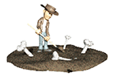

Krist Wood interview
How did you go into this field?
Are you referring to the field of computer and internet art? If so, I got into this field by virtue of my parents introducing a computer to the household at the time when I was developing an identity as an artist. I began using the computer as an artistic tool before the internet was available and had grown accustomed to it by the time the internet was introduced. The arrival of the internet was mind-bending and the computer artist was enveloped by something that was both a medium and a wilderness.
It was an exhilarating time and it was, and still is, intoxicating.
Can you tell me more about your background, like where you studied, where you worked before you came to Yale?
I spent my childhood in rural New York . My formal education, prior to settling at Yale, also took place there.I would like to return and live there some day.
I heard that you are working in biology department at yale, What kind of things you have to do for this job? Does the job influence your artwork? If so, what are some examples?
I have a doctorate in cell and molecular biology and conduct research on the mechanistic nature of sensory systems at the cellular level. For this job, I do things such as molecular cloning, cell culturing, genetic engineering, and biochemical analyses; I especially like to work with electron microscopes and laser-scanning confocal microscopes to pinpoint the location of specific proteins within the internal architecture of cells. This job also requires an extensive amount of writing (grants and articles) and lecturing. From my perspective, this discipline is continuous with my artwork and I do not partition these things separately such that one influences the other. Whether it be a scientific problem or an aesthetic problem, I am attempting to be present in the atmosphere of my imagination where a thought can be captured, suspended, and used as a basis for rearranging my environment to reflect that thought. If I had to make a distinction between scientific pursuit and artistic pursuit for me it would be that my scientific observations tend to be directed outward toward my external environment, while my artistic observations tend to be directed inward toward the center of my person.
I found that you have 3 different websites, Computer lab, Begin records and Internet Archeology, are they kind of three interests that you have?
Do you mean Computers Club? I created the websites computer club and begin records. Internet Archaeology was created by Ryder Ripps. The websites computersclub.org and beginrecords.com have to do principally with my interest in the characters I encounter on the internet and how they harmonize with one another in a grouping. Internet Archaeology, which unfortunately has been dormant for some time, is related to my interest in the decay and preservation of information found within the internet.
what other hobbies do you have besides creating online art pieces?
I do not have any hobbies.
I found there are also other artists in those websites, have you collaborated with other artists? Which piece is the result of your cooperation? Do you prefer working alone or with others?
Computers Club is a group of internet characters seen here. There is also a separate branch of the club known as the "Drawing Society" which has a slew of other members (about 100). I have collaborated on various things with many of these people, though I don't often share my artistic results whether collaboration or not. One example is my work of art titled "sadf ii", performed here by Sara Ludy, Petra Cortright, Sarah Weis, and Krystal South.Here are two works of art resulting from collaboration with artist Bunny Rogers: Our threshold and corners. I don't ever feel alone when working.
which part of the process do you get most excited about?
What makes me most excited about the process of artwork with the computer and internet is the fantasy of someone exploring the internet and unintentionally coming upon something I have made. It is this type of moment that I most cherish when I am exploring the internet. Sometimes, if I am lucky, I find myself in an unknown place and there I find a curious thing that someone has apparently made. I wonder what it is and who might have made it. There was an early time in the development of the internet when this type of experience was frequent for an explorer, now it can be scarce. If someone could have this experience with the results of my artwork that I decide to share, then I am so happy. For this, I can only take the things that I create and sprinkle them in remote places and say little more.
I like your ‘corners’ so much, especially the black music box with a shining spring, I want to own it!!! How do you come up with this idea?
The music box in corners derives from an internet project that I have been working on with artist Bunny Rogers in which she records herself freely singing her poetry and I transcribe the resulting melodies and score musical arrangements with them. In that case, Bunny sang her poem "unusuble chaire" and I created an arrangement of the resulting melody for music box. You might notice that the cube is featured, along with a variety of other manifestations of the number 6, in many of the artworks that I have shared on my website and elsewhere; the form of the music box continues this thread.
Your Sialiath piece is very interesting, it feels like being in a dream to me. Have you ever had dreams like this? Or is it inspired by your dreams? Do you record your dreams after you wake up?
Are you interested in religion? I feel your work seems very mysterious and I saw some symbols in your work.
Religion is one of many phenomenons of nature that capture my interest. If symbols appear in my artwork, they are coincident with symbols used by existing or past religions, not derived from them.
Do you have any "favorite" pieces? If so, can you talk more about them?
Many of my most cherished works of art are sounds and I spend the majority of my own artistic efforts with sound. To give an example, the art works of composerToru Takemitsu are especially dear to me. As I have said in previous interviews, when I endeavor to express myself artistically, with sound as well as visual mediums, I'm interested chiefly in the sensation of space. If I conceive of an event or form that I want to pursue artistically, then I devote my attention to the characteristics of the space where I imagine it to occur. The colors and contours of a landscape, or the surfaces and ambiance of an interior become paramount to the realization of the subject. So too with music, the space in which the sound travels and resonates and the fabric of silence that the sounds inhabit are absolute foci of my attention. I find this sentiment to be especially vivid in the artwork of Toru Takemitsu.
what have you created recently?